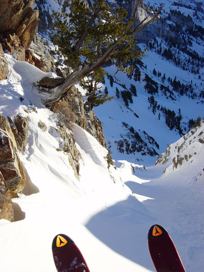
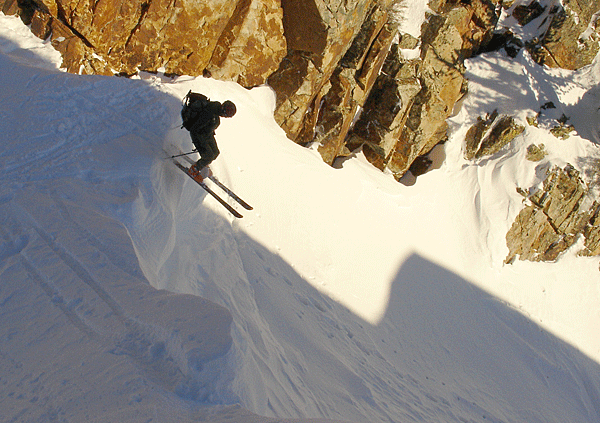

|
Suicide Chute
Gee, Foothill has only been drooling over this line since
he came to Utah 14 years ago. Twas about time. Now He'll
have to go back and ski it in good conditions.
On the lower apron I was carving up some thin breakable crust when my right
ski hit a hidded ice nugget bomb and blew the heel out of my dynafit. Remind
me to tighten those things down. Watch a
video.

The view from Helmüts pants. Photo by Helmüt.

Helmüt commits to crusty suicide.
|